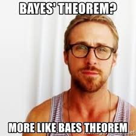
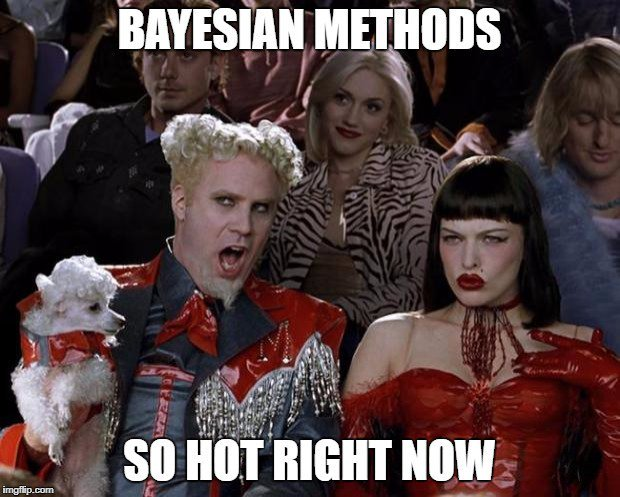
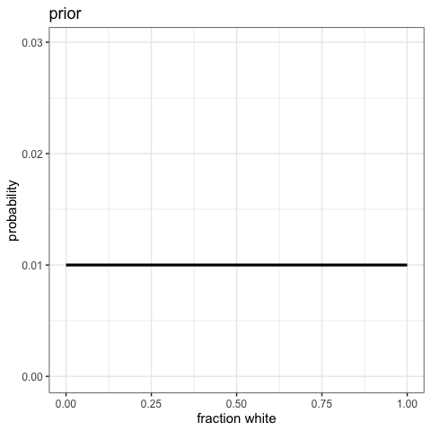
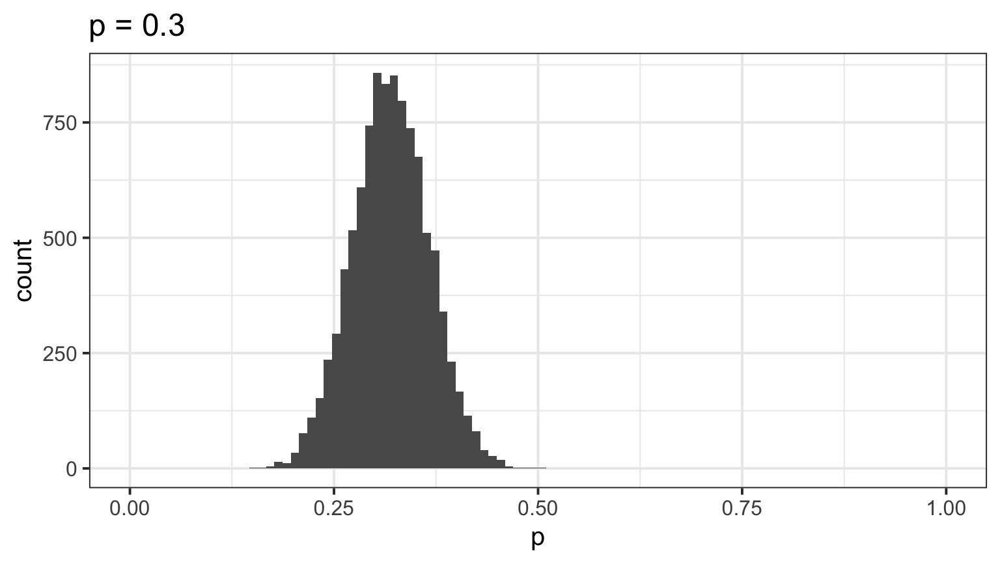

Back to Bayes-ics

Bayesian Inference

Estimate probability of a parameter
State degree of believe in specific parameter values
Evaluate probability of hypothesis given the data
Incorporate prior knowledge
- Frequentist: p(x ≤ D | H)
- Likelhoodist: p( D | H)
- Bayesian: p(H | D)
Why is this approach inherently Bayesian?

Let’s see how Bayes works
I have a bag with 4 stones. Some are black. Some are white.
I’m going to draw stones, one at a time, with replacement, and let’s see the number of ways that the draw could have been produced.
After 4 draws, let’s calculate the probability of W white stones and B black stones. Let’s formalize how we made this calculation - and derive Bayes Theorem!
Bayes Theorem and Stones
- Each possibility = H
- Prior plausibility = P(H)
- P(Draw | H) = Likelihood
- Sum of all P(Draw | H) P(H) = Average Likelihood
- = P(Draw)
Bayes Theorem and Stones
\[p(H_i | Draw) = \frac{Likelihood\,* \,Prior}{Average\,\,Likelihood}\]
Bayes Theorem and Stones
\[p(H_i | Draw) = \frac{p(Draw | H_i) p(H_i)}{P(Draw)}\]
Bayes Theorem

\[p(Hypothesis | Data) = \frac{p(Data | Hypothesis) p(Hypothesis)}{P(Data)}\]
Bayesian Updating

Now let’s do that over again! And again!
Watch the Updating in Realtime!

Let’s do this in R with Grid Sampling!
Use dplyr and mutate() for the following.
- Chose what fraction of stones is white in a bag of infinite size.
- Creat a column of possible values from 0 to 1.
- Define a prior as the second column.
- Calculate your posterior after 1 random draw, then repeat for draws 2-4 plotting your posteriors
- posterior = likelihood*prior/sum(all posterior values)
- posterior = likelihood*prior/sum(all posterior values)
- Plot your posterior given 100 draws, given your initial prior.
Introducing rethinking
library(rethinking)
#alist is a list for used to define a model
some_model <- alist(
#our likelihood
#our prior - can be something else if you want!
)
#define the data - you fill in the probability
some_data <- list(...)
#We will use map - maximum a posteriori sampling
#Note, I use rethinking:: in case you've loaded purrr
some_fit <- rethinking::map(some_model,
data = some_data)Introducing rethinking
This is from the Rcode on page 42, box 2.6. Assume 100 draws.
library(rethinking)
#alist is a list for used to define a model
draws_mod <- alist(
#our likelihood
w ~ dbinom(100, p),
#our prior - can be something else if you want!
p ~ dunif(0,1)
)
#define the data - you fill in the number of successes
draws_data <- list(w = 32)
#We will use map - maximum a posteriori sampling
#Note, I use rethinking:: in case you've loaded purrr
draws_fit <- rethinking::map(draws_mod,
data = draws_data)Now let’s explore our output
Maximum a posteriori (MAP) model fit
Formula:
w ~ dbinom(100, p)
p ~ dunif(0, 1)
MAP values:
p
0.3200005
Log-likelihood: -2.46 Summary
Mean StdDev 5.5% 94.5%
p 0.32 0.05 0.25 0.39precis
Mean StdDev 20.0% 80.0%
p 0.32 0.05 0.28 0.36Evaluation of a Posterior: Bayesian Credible Intervals
In Bayesian analyses, the 95% Credible Interval is the region in which we find 95% of the possible parameter values. The observed parameter is drawn from this distribution. For normally distributed parameters:
\[\hat{\beta} - 2*\hat{SD} \le \hat{\beta} \le \hat{\beta} +2*\hat{SD}\]
where \(\hat{SD}\) is the SD of the posterior distribution of the parameter \(\beta\). Note, for non-normal posteriors, the distribution may be different.
Evaluation of a Posterior: Frequentist Confidence Intervals
\[\hat{\beta} - t(\alpha, df)SE_{\beta} \le \beta \le \hat{\beta} +t(\alpha, df)SE_{\beta}\]
Credible Intervals versus Confidence Intervals
- Frequentist Confidence Intervals tell you the region you have confidence a true value of a parameter may occur
- If you have an estimate of 5 with a Frequentist CI of 2, you cannot say how likely it is that the parameter is 3, 4, 5, 6, or 7
- Bayesian Credible Intervals tell you the region that you have some probability of a parameter value
- With an estimate of 5 and a CI of 2, you can make statements about degree of belief in whether a parmeter is 3, 4,5, 6 or 7 - or even the probability that it falls outside of those bounds
The Posterior with extract.samples
p
1 0.3544378
2 0.2834933
3 0.3437578
4 0.2504989
5 0.3051117
6 0.3089026Visualize the posterior

Your turn
- Fit a binomial model using rethinking with - 19 successes - 50 trials
- Plot it
- If you can, with geom_ribbon(), highlight the 75% CI